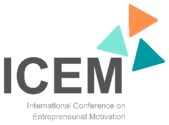

Dottorando di ricerca in Scienze economiche e aziendali presso l'Università degli Studi di Cagliari (Italia).
Economia del turismoSostenibilitàAI nel turismo
Biografia
Sono un dottorando di ricerca in scienze economiche e aziendali (41° ciclo) presso l'Università degli Studi di Cagliari.
Il mio percorso accademico è guidato dalla passione per la sostenibilità basata sull'analisi dei dati. Nel 2025 ho conseguito la laurea magistrale in Management e Monitoraggio del Turismo Sostenibile, discutendo una tesi che ha analizzato i dati turistici e stimato l'economia sommersa del turismo nella città di Cagliari. Nello stesso anno ho unito la ricerca all'impatto pratico collaborando al progetto "Radici Sarde" (e.INS), progettando esperienze turistiche su misura per la diaspora sarda nel mondo.
Attualmente, la mia ricerca si concentra sull'adozione e l'utilizzo dell'intelligenza artificiale da parte dei turisti per la pianificazione e la prenotazione di esperienze di viaggio, con un focus specifico sui chatbot AI, utilizzando metodologie miste qualitative e quantitative.
Alla conferenza Sinergie-SIMA 2026 ho ricevuto il premio come "Outstanding Young Scholar Reviewer".
Focus di ricerca attuale
Dottorato 41° ciclo · Ricerca sul campo
Adozione e Processi Decisionali dei Turisti con IA Generativa e Chatbot
Indagine sulle modalità con cui i viaggiatori interagiscono con gli agenti di intelligenza artificiale conversazionale per pianificare itinerari, prenotare e scoprire destinazioni sostenibili, mediante metodologie miste qualitative e quantitative.
Ricerca e Pubblicazioni
Paper e abstract di conferenze
Abstract di conferenza · Balbina, A., Vincis, A., & Dessì, C. (2026)."Driving Sustainable Destinations through Digital Transformation: A Qualitative Inquiry into Local SMEs in Sardinia."6th ICEM Conference 2026 (Abstract di conferenza).
Paper di conferenza · Vincis, A., Tedde, D., Balbina, A., & Dessì, C.
(2026)."AI Literacy as a Hiring Signal in Project Management Recruitment."Sinergie-SIMA Management Conference 2026 Proceedings, Università di Pavia, ISBN 979-12-243-4261-8.
Paper di conferenza · Dessì, C., Vincis, A., Balbina, A., & Succa, A.
(2026)."Dual-Speed Transformation After Succession: Why Family Business Groups Change while Staying the Same."Sinergie-SIMA Management Conference 2026 Proceedings, Università di Pavia, ISBN 979-12-243-4261-8.
Capitolo di libroDessì, C., Vincis, A., & Balbina, A."People Management in AI-Enabled SMEs: A Human-Centered Capability
Perspective."Capitolo di libro in uscita nella collana Innovation in Human Centered
Sustainability: Human Centered Sustainability in the AI Age.
Working PaperBalbina, A."Adoption of Artificial Intelligence by Tourists: A Literature Review."Working paper/In corso, volto a esplorare le applicazioni dell'IA nella pianificazione dei viaggi, nella ricerca delle destinazioni e nelle prenotazioni turistiche.
Presentazioni e relazioni
Presentazione a conferenza · Balbina, A. & Vincis, A. (2026)."Driving Sustainable Destinations through Digital Transformation: A Qualitative Inquiry into Local SMEs in Sardinia."Lavoro presentato da remoto alla VI International Conference on Entrepreneurial Motivation (ICEM 2026), Valencia, Spagna.
Relazione · Dessì, C. & Balbina, A. (2026)."Cineturismo, immaginario audiovisivo e territorio: dalla letteratura
internazionale al caso locale de L'Isola di Pietro."Relazione presentata all'evento Ogni film è un viaggio, Società Umanitaria,
Cagliari, Italia.
Conferenze & Eventi Accademici

Da remotoValencia, ES
VI International Conference on Entrepreneurial Motivation (ICEM 2026)
Valencia, Spagna (Partecipazione da remoto)
19–20 Ottobre 2026
Contributo presentato
"Driving Sustainable Destinations through Digital Transformation: A Qualitative Inquiry into Local SMEs in Sardinia"
Dottorato di ricerca in Scienze economiche e aziendali (41° ciclo)
Università degli Studi di Cagliari, Italia
– in corso
Dipartimento di Scienze Economiche ed Aziendali
Focus: Utilizzo dell'intelligenza artificiale da parte dei turisti per la pianificazione e prenotazione di esperienze di viaggio, con particolare attenzione ai chatbot di intelligenza artificiale mediante metodologie miste qualitative e quantitative.
Supervisori: prof.ssa Cinzia Dessì (supervisore), prof. Ivan Etzo (co-supervisore)
Laurea Magistrale in Management e Monitoraggio del Turismo Sostenibile
Università degli Studi di Cagliari, Italia
–
Votazione: 110/110 e lode
Tesi: Dati turistici, sostenibilità e stime del turismo sommerso. Caso studio del comune di
Cagliari.
Laurea Triennale in Scienze della Comunicazione
Università degli Studi di Cagliari, Italia
–
Votazione: 106/110
Tesi: Rebrand e social media strategy: Il caso dell'azienda agricola "Opuntia".
Esperienza Professionale
Consulente per lo sviluppo locale e il turismo (apprendistato)
Rete Gaia, Sardegna, Italia (Ibrido)
–
Attività di consulenza nella progettazione e attuazione di iniziative di sviluppo locale sostenibile.
Svolgimento di attività di animazione economica territoriale.
Analisi della domanda ed elaborazione di prodotti dell'offerta turistica.
Consulenza, sviluppo territoriale e supporto marketing per Sardinian Roots, progetto incentrato sul turismo delle radici.
Consulenza di marketing e creazione di contenuti online e offline per Italea Sardegna.
Collaboratore di ricerca
progetto Sardinian Roots (e.INS)
Contributo alla progettazione di esperienze turistiche personalizzate per la diaspora sarda nel mondo, coniugando la valorizzazione del patrimonio locale con strategie di turismo sostenibile.
Data analyst (tirocinio)
Comune di Cagliari, Italia
–
Tirocinio curriculare presso l'Ufficio turismo del Comune di Cagliari.
Tutor universitario - Laurea triennale in Economia e gestione aziendale
Università degli Studi di Cagliari, Italia (Ibrido)
–
Attività di tutorato, didattico-integrative, propedeutiche e di recupero ai sensi dell'Art. 3 del D.M. n. 1047/2017.
Organizzazione e supervisione dei test di ammissione TOLC.
Automazione dei processi di immatricolazione, trasferimento di corso e riconoscimento CFU.
Addetto di scalo aeroportuale (stagionale)
SOGAERDYN S.p.A., Cagliari, Italia
–
Servizio di accoglienza e assistenza passeggeri, procedure di check-in, operazioni di imbarco e finalizzazione dei voli (4 anni e 5 mesi totali distribuiti su 4 stagioni).
Competenze e certificazioni
Programmazione e analisi dati
PythonRProcessingStataData ScrapingEconometriaSpatial Data
Lingue
Italiano MadrelinguaSardo MadrelinguaInglese Fluente · C1Spagnolo Elementare · A2Olandese Base · A1
Certificazioni e abilitazioni
IBSEN Entrepreneurship Workshop Series IBSEN Network(febbraio 2025)
BLSD (Rianimazione Cardio-Polmonare con Defibrillatore) Ircomunità A.p.s.(rilascio: giugno 2022 · scadenza: giugno 2026)